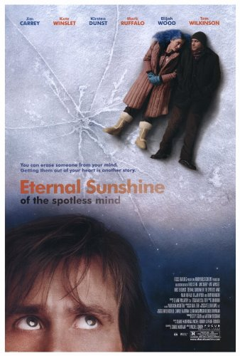

|  | Es una película de drama, romance y ciencia ficción estadounidense de 2004, dirigida por Michel Gondry y escrita por Charlie Kaufman. La historia trata sobre una pareja separada que, mediante un proceso de borrado de memoria, se han borrado uno al otro y que luego vuelven a conocerse. El título del filme proviene de una línea del poema Eloisa to Abelard de Alexander Pope. La cinta contiene elementos del thriller psicológico y usa una narrativa no lineal para explorar la naturaleza de la memoria y el amor romántico. Fue ganadora del Premio Óscar al mejor guion original y Winslet recibió una candidatura como mejor actriz. La película se volvió de culto durante los años siguientes a su estreno y es considerada por muchos críticos como uno de los mejores filmes del siglo veintiuno |
||
|
Dirección: |
Michel Gondry |
||
|
Guión: |
Charlie Kaufman |
||
|
Actores: |
Jim Carrey |
||